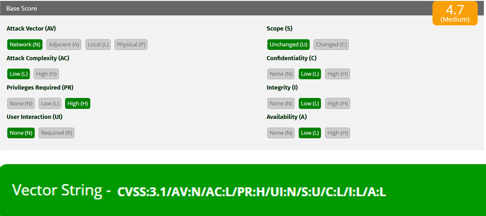
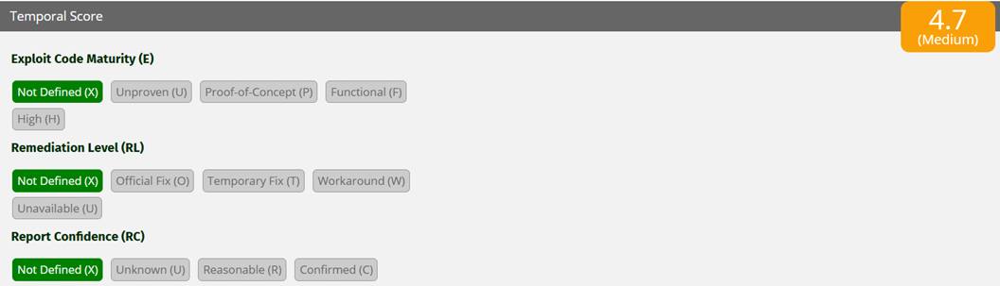
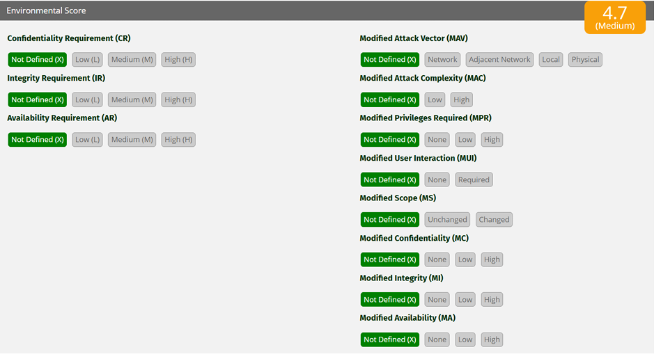

El Common Vulnerability Scoring System (CVSS) es el estándar internacional para evaluar la severidad de las vulnerabilidades de seguridad. Actualmente en su versión 3.1, este sistema permite a las organizaciones priorizar sus esfuerzos de remediación mediante una puntuación numérica objetiva y reproducible. El CVSS se compone de tres grupos de métricas: Base (características intrínsecas de la vulnerabilidad), Temporal (factores que cambian con el tiempo) y Entorno (características específicas de la organización). En esta actividad nos enfocamos exclusivamente en las métricas base, que son las más universales y permiten comparar vulnerabilidades entre diferentes sistemas.
A partir de un escenario proporcionado, se construyó el vector de ataque utilizando las métricas: Attack Vector (AV), Attack Complexity (AC), Privileges Required (PR), User Interaction (UI), Scope (S), Confidentiality (C), Integrity (I) y Availability (A). El vector resultante fue: CVSS:3.1/AV:N/AC:L/PR:H/UI:N/S:U/C:L/I:L/A:L. Con esta información se calculó la puntuación base (4.7) y se clasificó como vulnerabilidad de nivel MEDIO. A continuación se detalla la construcción, interpretación técnica, cálculo y conclusiones derivadas del análisis.
Integrantes:
Docente: Mtro. Servando López Contreras
Grupo: T46A
Fecha: Marzo 2026
Asignatura: CNO V – Seguridad Informática | Actividad 17: Evaluación de vulnerabilidades con CVSS 3.1
Con base en el escenario proporcionado, se asignaron las siguientes métricas base:
| Métrica | Valor | Significado |
|---|---|---|
| AV (Attack Vector) | N (Network) | La vulnerabilidad puede explotarse a través de la red. |
| AC (Attack Complexity) | L (Low) | La explotación requiere baja complejidad. |
| PR (Privileges Required) | H (High) | Se necesitan privilegios elevados. |
| UI (User Interaction) | None (N) | No requiere interacción del usuario. |
| S (Scope) | U (Unchanged) | No cambia el alcance del componente afectado. |
| C (Confidentiality) | L (Low) | Impacto bajo en confidencialidad. |
| I (Integrity) | L (Low) | Impacto bajo en integridad. |
| A (Availability) | L (Low) | Impacto bajo en disponibilidad. |



Aunque esta vulnerabilidad necesita privilegios elevados para poder explotarse, sigue siendo importante debido a que un atacante con acceso administrativo o permisos avanzados podría utilizarla para afectar aún más los sistemas internos de la organización. Este tipo de fallas representa un riesgo especialmente en situaciones donde existen cuentas comprometidas, amenazas internas o procesos previos de escalamiento de privilegios.
Quienes podrían aprovecharla serían principalmente usuarios internos malintencionados, administradores comprometidos o atacantes externos que hayan conseguido credenciales privilegiadas mediante técnicas como phishing, filtración de información o ataques de fuerza bruta. Aunque el impacto en la confidencialidad, integridad y disponibilidad es bajo, esto únicamente indica que no ocaasiona daños críticos ni pérdida total de información; aun así, puede generar accesos parciales a datos, cambios menores en el sistema o interrupciones limitadas del servicio, por lo que continúa siendo una vulnerabilidad que requiere atención y mitigación.
Usando la calculadora oficial CVSS v3.1 (FIRST.org) con el vector de severidad global de la industria:
Nota: La puntuación base refleja únicamente las características intrínsecas de la vulnerabilidad, sin considerar factores temporales o ambientales. El valor final se ubica justamente en el rango medio, estableciendo una urgencia de remediación programada dentro del ciclo de desarrollo de parches.
La vulnerabilidad analizada alcanzó una puntuación de 4.7 en CVSS v3.1, por lo que se considera de nivel medio. A pesar de que para explotarla se requieren privilegios elevados, sigue representando un riesgo importante, ya que podría ser utilizada por usuarios internos maliciosos o por atacantes que hayan obtenido acceso a cuentas privilegiadas. Asimismo, el hecho de que pueda explotarse remotamente y con baja complejidad técnica aumenta su importancia dentro de la infraestructura de una organización.
Aunque las afectaciones en confidencialidad, integridad y disponibilidad son bajas y no implican un daño crítico al sistema, es recomendable implementar controles de seguridad, supervisión de cuentas con altos privilegios y estrategias de mitigación que ayuden a disminuir la probabilidad de explotación. Entre las acciones sugeridas se incluyen: auditorías periódicas de cuentas privilegiadas, monitoreo de logs, aplicación del principio de mínimo privilegio y segmentación de red para limitar el alcance de posibles accesos no autorizados.
El CVSS es una herramienta fundamental para cualquier profesional de ciberseguridad, pero también tiene limitaciones. Una vulnerabilidad con puntuación "media" (4.7) puede ser crítica en un contexto específico si el activo afectado es sensible. Por ello, la evaluación de vulnerabilidades no debe terminar con el cálculo de la métrica base; es necesario complementar con análisis de contexto (métricas de entorno) y con la criticidad del sistema evaluado.
En esta actividad comprendí la importancia de cada métrica: Privileges Required (PR:H) reduce significativamente la puntuación, pero en entornos donde los privilegios elevados están mal gestionados (por ejemplo, contraseñas débiles de administrador), la vulnerabilidad se vuelve mucho más peligrosa. Además, la métrica Attack Vector (AV:N) indica que no se necesita acceso físico o local, por lo que un atacante externo podría intentar explotarla desde cualquier parte del mundo, siempre que consiga credenciales privilegiadas. Esto refuerza la necesidad de implementar autenticación multifactor (MFA) y monitoreo de accesos anómalos a cuentas administrativas.
Finalmente, el CVSS 3.1 nos da un lenguaje común para comunicar riesgos a equipos de dirección y a otros equipos técnicos. Saber interpretar y construir vectores correctamente es una habilidad indispensable para la gestión de vulnerabilidades en entornos corporativos.